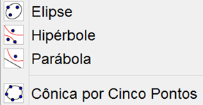
O próximo ícone é destinado ao estudo das cônicas.
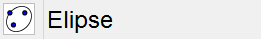
Você precisa selecionar 3 pontos. Os dois primeiros serão os focos e o terceiro ponto pertencerá à elipse.
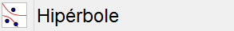
Similar à elipse. Primeiro você seleciona os dois focos e o terceiro ponto pertencerá à hipérbole.
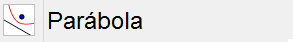
Antes de usar essa função você precisa criar uma reta que será a diretriz da parábola. Depois crie um ponto que será o foco e por último clique na reta que você criou para traçar a parábola.
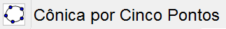
Nessa função você cria 4 pontos quaisquer e a cônica produzida dependerá da posição do 5º ponto.
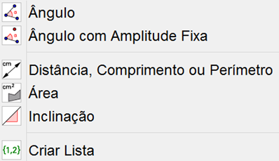
O próximo ícone trata de ângulos, perímetro, área e lista.
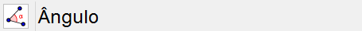
Você precisa de objetos que sejam concorrentes ou polígonos. Lembrando que para calcular o ângulo interno clique nos dois lados no sentido anti-horário e para calcular o ângulo externo clique nos dois lados no sentido horário.
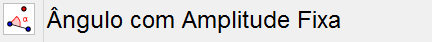
Para utilizar esse recurso você precisa de um ponto e um objeto que tenha vértice (segmento ou polígono). Primeiro clique no ponto e depois no vértice e aparecerá uma caixa onde você precisa indicar a medida do ângulo e o sentido (horário ou anti-horário). Um novo ponto irá aparecer e basta traçar um segmento do primeiro ponto até o vértice e depois outro segmento do novo ponto até o vértice.
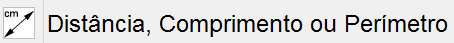
Calcula qualquer tipo de distância, comprimento ou perímetro. São várias as possibilidades: ponto-ponto, ponto-reta, reta-reta, ponto-eixo, entre outros.
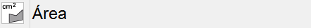
Calcula a área de qualquer polígono, círculo ou elipse, basta clicar sobre o objeto para aparecer automaticamente à medida da área.
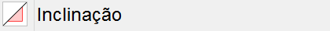
Clique sobre uma reta, semirreta ou segmento para aparecer o valor da inclinação.
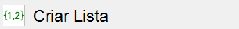
Arraste e marque os objetos para listar as coordenadas e equações dos objetos selecionados.
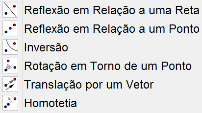
O próximo ícone trata basicamente de reflexões e efeitos de rotação.
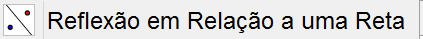
Para utilizar esse recurso você precisa primeiro de um objeto qualquer e uma reta. Primeiro clique no objeto e depois na reta de reflexão para criar um objeto congruente ao primeiro e com distância igual entre reta e objeto.
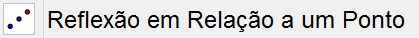
Primeiro você precisa criar um objeto. Depois disso crie um ponto qualquer que um novo objeto refletido em relação ao ponto irá aparecer.
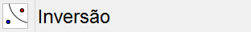
Para desenhar a inversão de um objeto em relação a um círculo basta clicar primeiro no objeto e depois no círculo.
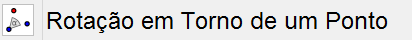
Crie dois pontos (A e B por exemplo) e irá aparecer uma caixa onde você deve indicar a medida do ângulo e o sentido. Depois disso será criado um terceiro ponto (C) onde o ângulo indicado por você será o vértice entre os segmentos AB e BC.
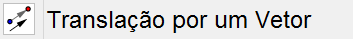
Antes você precisa de um objeto e um vetor. Automaticamente irá aparecer o novo objeto transladado em relação ao vetor.
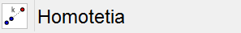
Dado um objeto (segmento de reta ou polígono) clique nele e depois clique onde deseja que seja o centro da homotetia. Uma caixa vai abrir onde você precisa colocar qual é o fator pelo qual o objeto será ampliado ou reduzido. Lembrando que números decimais devem ser representados com ponto no lugar da vírgula. Por exemplo: no lugar de colocar 1,8 coloque 1.8.
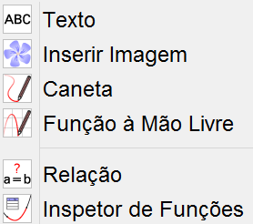
O próximo ícone trata basicamente de formatação e de edição.
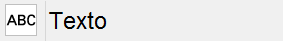
Ao selecionar essa opção você deve proceder da mesma maneira quando você vai inserir uma caixa de texto nos programas de edição de texto comuns, basta segurar o botão esquerdo do mouse e arrastar. Assim que você soltar o botão uma caixa irá abrir onde você vai digitar o que deseja, inserir símbolos ou algum texto em LaTeX.
Insere uma imagem do diretório de seu computador ou disco removível diretamente na área de trabalho do GeoGebra.
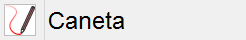
Desenhe o que desejar. Basta segurar o botão esquerdo do mouse e arrastar pela área de trabalho.
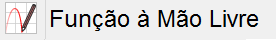
O programa tenta “entender” o que você quis desenhar e substitui o que você desenhou por uma figura ou objeto.
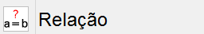
Selecione dois objetos e os compare. Uma caixa irá aparecer com o resultado.
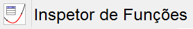
Selecione uma função para estudá-la.
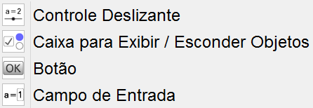
Esse ícone trata de controle de objetos para melhor estuda-los.
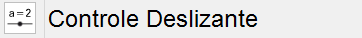
Uma das ferramentas mais importantes e um pouco complicada de explicá-la teoricamente. O vídeo abaixo explica bem detalhadamente o funcionamento dessa função.

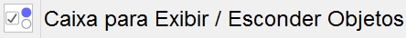
Cria uma caixa onde você pode exibir ou esconder o objeto selecionado previamente.
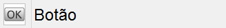
Insere um botão na janela de visualização.
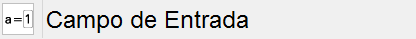
Cria um campo de entrada na janela de visualização para que você possa modificar o objeto ligado ao campo de entrada.